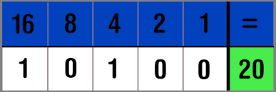
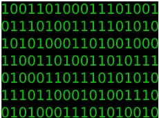

Het binair stelsel bestaat uit nullen en eenen. Die nullen en eenen woorden ook wel bits genoemd. Wanneer je hier een reeks van maakt, dus meerdere nullen en eenen gebruikt noem je het een byte. Als voorbeeld: een halve pagina met tekst op een computer is hetzelfde als 1KB(1 kilobyte), 1000 bytes. Het bianir stelsel komt overal voor en de nullen en eenen kunnen alle getallen of frequenties aannemen die ze willen. Bij lampen bijvoorbeeld, 1 betekent aan en 0 betekent uit. Dit is vrij eenvoudig maar je begrijpt het principe. Elk karakter is opgebouwd uit 1 byte, wat weer 8 bits zijn. een bit kan dan weer een 1 of een 0 zijn. Zo kan een karakter bestaan uit 01001001.
 